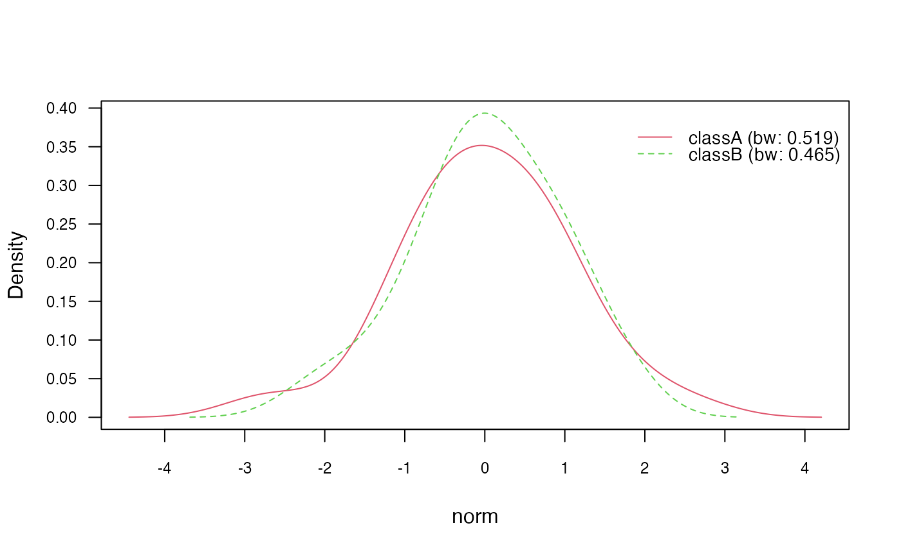
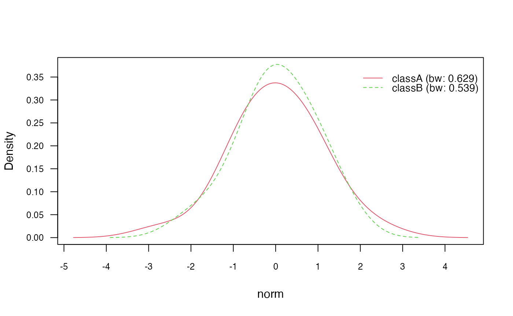

vignettes/naivebayes.Rmd
naivebayes.RmdThe naivebayes package provides a user friendly implementation of the Naïve Bayes algorithm via formula interlace and classical combination of the matrix/data.frame containing the features and a vector with the class labels. All functions can recognize missing values, give an informative warning and more importantly - they can handle them. In following the basic usage of the naivebayes package is demonstrated:
Example data
library(naivebayes)
# Simulate example data
n <- 100
set.seed(1)
data <- data.frame(class = sample(c("classA", "classB"), n, TRUE),
bern = sample(LETTERS[1:2], n, TRUE),
cat = sample(letters[1:3], n, TRUE),
logical = sample(c(TRUE,FALSE), n, TRUE),
norm = rnorm(n),
count = rpois(n, lambda = c(5,15)))
train <- data[1:95, ]
test <- data[96:100, -1]Formula interface
##
## ================================ Naive Bayes =================================
##
## - Call: naive_bayes.formula(formula = class ~ ., data = train)
## - Laplace: 0
## - Classes: 2
## - Samples: 95
## - Features: 5
## - Conditional distributions:
## - Bernoulli: 2
## - Categorical: 1
## - Gaussian: 2
## - Prior probabilities:
## - classA: 0.5263
## - classB: 0.4737
##
## ------------------------------------------------------------------------------## [1] classB classA classA classA classA
## Levels: classA classB## [1] classB classA classA classA classA
## Levels: classA classB## classA classB
## [1,] 0.4998488 0.5001512
## [2,] 0.5934597 0.4065403
## [3,] 0.6492845 0.3507155
## [4,] 0.5813621 0.4186379
## [5,] 0.5087005 0.4912995## classA classB
## [1,] 0.4998488 0.5001512
## [2,] 0.5934597 0.4065403
## [3,] 0.6492845 0.3507155
## [4,] 0.5813621 0.4186379
## [5,] 0.5087005 0.4912995##
## ------------------------------------------------------------------------------
## ::: bern (Bernoulli)
## ------------------------------------------------------------------------------
##
## bern classA classB
## A 0.4400000 0.4888889
## B 0.5600000 0.5111111
##
## ------------------------------------------------------------------------------## bern cat logical norm count
## "Bernoulli" "Categorical" "Bernoulli" "Gaussian" "Gaussian"Matrix/data.frame and class vector
## classA classB
## [1,] 0.4998488 0.5001512
## [2,] 0.5934597 0.4065403
## [3,] 0.6492845 0.3507155
## [4,] 0.5813621 0.4186379
## [5,] 0.5087005 0.4912995Non-parametric estimation for continuous features
Kernel density estimation can be used to estimate class conditional densities of continuous features. It has to be explicitly requested via the parameter usekernel=TRUE otherwise Gaussian distribution will be assumed. The estimation is performed with the built in R function density(). By default, Gaussian smoothing kernel and Silverman’s rule of thumb as bandwidth selector are used:
##
## ================================ Naive Bayes =================================
##
## - Call: naive_bayes.formula(formula = class ~ ., data = train, usekernel = TRUE)
## - Laplace: 0
## - Classes: 2
## - Samples: 95
## - Features: 5
## - Conditional distributions:
## - Bernoulli: 2
## - Categorical: 1
## - KDE: 2
## - Prior probabilities:
## - classA: 0.5263
## - classB: 0.4737
##
## ------------------------------------------------------------------------------## bern cat logical norm count
## "Bernoulli" "Categorical" "Bernoulli" "KDE" "KDE"## classA classB
## [1,] 0.6252811 0.3747189
## [2,] 0.5441986 0.4558014
## [3,] 0.6515139 0.3484861
## [4,] 0.6661044 0.3338956
## [5,] 0.6736159 0.3263841# Class conditional densities
plot(nb_kde, "norm", arg.num = list(legend.cex = 0.9), prob = "conditional")
# Marginal densities for each class
plot(nb_kde, "norm", arg.num = list(legend.cex = 0.9), prob = "marginal")Changing kernel
In general, there are 7 different smoothing kernels available:
gaussianepanechnikovrectangulartriangularbiweightcosineoptcosine
and they can be specified in naive_bayes() via parameter additional parameter kernel. Gaussian kernel is the default smoothing kernel. Please see density() and bw.nrd() for further details.
# Change Gaussian kernel to biweight kernel
nb_kde_biweight <- naive_bayes(class ~ ., train, usekernel = TRUE,
kernel = "biweight")
nb_kde_biweight %prob% test## classA classB
## [1,] 0.6237152 0.3762848
## [2,] 0.5588270 0.4411730
## [3,] 0.6594737 0.3405263
## [4,] 0.6650295 0.3349705
## [5,] 0.6631951 0.3368049
Changing bandwidth selector
There are 5 different bandwidth selectors:
-
nrd0(Silverman’s rule-of-thumb) -
nrd(variation of the rule-of-thumb) -
ucv(unbiased cross-validation) -
bcv(biased cross-validation) -
SJ(Sheather & Jones method)
They can be specified via bw parameter.
## classA classB
## [1,] 0.7279209 0.2720791
## [2,] 0.4858273 0.5141727
## [3,] 0.7004134 0.2995866
## [4,] 0.7005704 0.2994296
## [5,] 0.7089626 0.2910374
Adjusting bandwidth
Each Bandwidth is chosen according to the bandwidth selector and they can be additionally adjusted by a factor given by adjust parameter:
nb_kde_adjust <- naive_bayes(class ~ ., train, usekernel = TRUE,
adjust = 1.5)
nb_kde_adjust %prob% test## classA classB
## [1,] 0.5769725 0.4230275
## [2,] 0.5953904 0.4046096
## [3,] 0.6512967 0.3487033
## [4,] 0.6550197 0.3449803
## [5,] 0.6024013 0.3975987
Model non-negative integers with Poisson distribution
Class conditional distributions of non-negative integer predictors can be modelled with Poisson distribution. This can be achieved by setting usepoisson=TRUE in the naive_bayes() function and by making sure that the variables representing counts in the dataset are of class integer.
## [1] TRUE##
## ================================ Naive Bayes =================================
##
## - Call: naive_bayes.formula(formula = class ~ ., data = train, usepoisson = TRUE)
## - Laplace: 0
## - Classes: 2
## - Samples: 95
## - Features: 5
## - Conditional distributions:
## - Bernoulli: 2
## - Categorical: 1
## - Poisson: 1
## - Gaussian: 1
## - Prior probabilities:
## - classA: 0.5263
## - classB: 0.4737
##
## ------------------------------------------------------------------------------## bern cat logical norm count
## "Bernoulli" "Categorical" "Bernoulli" "Gaussian" "Poisson"## classA classB
## [1,] 0.4815380 0.5184620
## [2,] 0.4192209 0.5807791
## [3,] 0.6882270 0.3117730
## [4,] 0.4794415 0.5205585
## [5,] 0.5209152 0.4790848